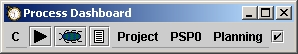

As you complete the activities for a given process phase, you should mark that phase as completed via the completion button.
When you mark a phase as completed, the data associated with that phase will show up in the various Project Summary forms in the "To Date" entries, the data analysis reports, and the PROBE tool. None of the forms or reports will show data from phases that the dashboard thinks are still ongoing.
When the completion button is pressed the dashboard moves the current phase to the next phase prescribed by the running process template. If the timer is currently running, it will automatically stop recording time for the given phase and start the timing of the next phase. For more information on using the timer, see the Using the Play/Pause button help topic.
Phases marked as complete will show a little checkmark in the completion button.

This example shows the Planning phase of a PSP0 project marked as complete.
If you need to go back to a previous phases in a given process, you can still do so even if the completion button has been pressed. The dashboard will still accumulate time in whatever phase you make current.